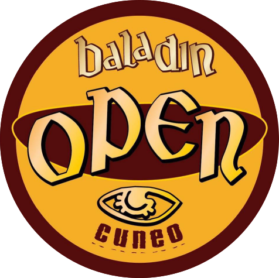

29 agosto - 21:00
Teatral'mente
storie di donne, di uomini, di montagne e di streghe
Teatro in Bottiglia & Compagnia del Melarancio

Open Baladin
Piazza
Foro Boario
Prenota ora!
Birrovia
Piazzale della
Vecchia Stazione Cuneo Gesso
Prenota ora!